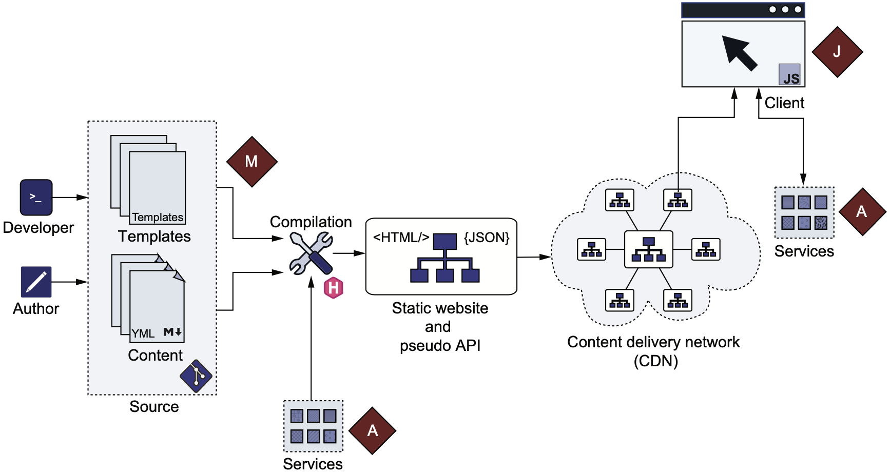

Study Hugo

常用命令
关闭缓存
$ hugo server -DEF --noHTTPCache --disableFastRender
_index.md 和 index.md 的区别
- _index.md: branch bundle, 该会展示该目录下的资源
- index.md: leaf bundle, 只展示该 index.md
Front Matter
就是在 md 文件开头, 用于描述元信息的数据, 可以是 yaml, json 等
---
title: "Study Hugo"
date: 2022-07-21T22:14:25+08:00
draft: false
---
jam 含义

- m: Markup, 注意区分 markdown
- j: Javascript
- a: APIs
结合例图来看, Hugo 用 M 和 A (其实是 js, 这里表示应用逻辑) 生成静态文件, 通过 CDN 分发到 Client 后, 可以通过 js 生成动态内容甚至是访问 由云提供商开放的 API.
这个 stack 使得用户的维护工作变得很少.
目录结构

- archetypes 存放模板
- content 存放数据
- data 存储结构化数据
- layouts 覆盖 theme 的一部分来自定义主题
- themes 渲染 content 中的内容的样式文件
- config Hugo 支持多配置文件, 这时需要组织到一个目录中
- static 建议将内容放到 content, data, themes, layouts 目录中, 而不是 static
- e.g. 二进制文件, 用于下载的文件
- assets img, js, css
- public Hugo 编译结果输出目录
- resources 相当于缓存目录, 提高编译速度
- 书中建议版本化该目录, 但是我认为没必要
- go.mod, go.sum Hugo Modules 需要这些文件来管理依赖
- vendor Hugo Modules 用到的第三方依赖
- node_modules, package.json, package-lock.json, package.hugo.json Hugo 和 JS 的集成所用到的文件
- .github, netlify.toml Hugo 持续集成服务所需文件
- api 存放自定义 API
assets 和 static 的区别
- assets 存放一些需要 Hugo 处理的文件 (Hugo Pipes)
- static 存放不需要 Hugo 处理的文件